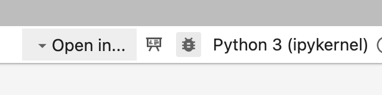

⚙️ Environment Setup
Table of contents
Where Will We Write Code?
In this class, we’ll be writing Python code, specifically in the context of machine learning. Instead of using a more traditional IDE or text editor + Terminal setup, where you write your code in one window and run it in a separate command-line, we will be using Jupyter, which allows us to write and run code within a single document. Within a Jupyter Notebook, not only can you run code and see its results in-line (from the results of print statements to interactive visualizations), but you can also write text and include images, which will be useful when communicating the results of data analyses to others.
In this class, labs and homeworks will involve writing some code in Python, using the Jupyter Notebook interface and some very specific versions of Python packages. There are two ways you can write code in this class:
- Option 1 (strongly preferred): By setting up Jupyter Notebooks and the correct package versions on your computer, and using Git to pull the latest versions of assignments.
- Option 2 (only as a backup): Using the EECS 245 DataHub, a web-based environment that allows you to access and run all necessary code directly in your browser by clicking a single link.
Option 1 – setting up Jupyter Notebooks on your computer – requires a bit of setup time (which we’ll help you with in Lab 1), but once you have it set up, it’s robust, reliable, and you can work on assignments on your own computer without needing to use the internet. At some point in a future course or in industry, you’ll need to do this anyways. Option 2 – using our server – can be easy to get started but is much less reliable, and is prone to crashing.
Option 1: Local Setup
This video walks through most of the steps here, but it’s not a substitute for reading this page carefully. (The video was originally recorded for a different class, which is why some of the names are different than what we’re using here.)
It’s a long, but useful video. In addition to walking you through the setup stages, it gives you some command-line tips and tricks, and shows you the various Jupyter Notebook interfaces you can choose between (JupyterLab, Notebook, Notebook Classic, VSCode). Here are some relevant timestamps:
- 2:40: Downloading and running the Miniforge3 installer, creating the
eecs245conda environment - 9:00: Cloning the course GitHub repository
- 11:25: Launching JupyterLab
- 12:28: Jupyter Notebook basics and the autograder
- 22:09: Restarting the kernel and submitting to Gradescope
- 24:53: JupyterLab, Jupyter Notebook, Jupyter Notebook Classic, VSCode, and Bash Profiles
- 29:25: Verifying public tests pass on Gradescope
Here, we’ll detail how to:
- Download Jupyter Notebooks and set up the correct Python packages on your computer, i.e. set up your “programming environment”.
- Access the latest versions of assignments from our course GitHub repository.
We’ll use the command-line (Terminal on macOS and Linux, or WSL on Windows) here extensively. This tutorial contains all of the commands you’ll need to follow, but if you’d like more details, you can check out the EECS 280 Command-Line Tutorial.
Step 0: If using Windows, install WSL
If you’re using macOS or Linux, you can skip to Step 1.
If you’re using a Windows machine, you’ll need to install the Windows Subsystem for Linux (WSL). This will run an Ubuntu Linux guest virtual machine on your Windows computer, giving you access to a Terminal that behaves the same way as on macOS and Linux. Follow the EECS 280 tutorial on how to install and use it then come back here.
Step 1: Install mamba
Download the
mambainstaller. To do this, open your Terminal and run:curl -L -O "https://github.com/conda-forge/miniforge/releases/latest/download/Miniforge3-$(uname)-$(uname -m).sh"This will place a file named something like
Miniforge3-Darwin-arm64.shwherever you ran the command. If you get an error sayingcommand not found: curl, replacecurl -L -Owithwgetand rerun the same command.Run the installer. To do this, immediately after the last command, run:
bash Miniforge3-$(uname)-$(uname -m).sh
When you’re asked "Do you wish to update your shell profile...", type yes and hit enter. If you accidentally say no, run the command bash Miniforge3-$(uname)-$(uname -m).sh again.
Now, if you restart your Terminal, it should show (base) at the start of each line. This is telling you you’re in the base, or default, conda environment.
Run into an error saying ERROR: File or directory already exists: /Users/<username>/miniforge3? Check out the Troubleshooting section below.
Step 2: Download environment.yml
This file contains the necessary details to configure your environment. If you take a look at it, you’ll see that it contains a specific Python version (python=3.10) along with specific package versions (like pandas==2.1.0 and scikit-learn==1.5.1, for example).
Step 3: Create a new conda environment
To create the environment, in your Terminal, run:
mamba env create -f environment.yml
Note that if you put environment.yml in your Downloads or Desktop folder, you should replace environment.yml with the path to the file, for example: mamba env create -f /Users/yourusername/Desktop/environment.yml. Otherwise, you might get an error saying environment.yml does not exist. Alternatively, you can cd to the directory on your computer in which environment.yml lives before running the above command. For example, if environment.yml is in your Downloads folder, run cd Downloads and then the command above.
This step may take several minutes, and that’s fine!
If you get an error using mamba, replace mamba with conda in the command above and the commands below. conda and mamba are interchangeable; mamba is just faster.
Step 4: Activate the environment
To do so, run:
mamba activate eecs245
Where did the name eecs245 come from, you might ask? We defined it for you at the top of environment.yml with name: eecs245.
If you get an error saying mamba isn’t defined, try closing and reopening your Terminal first and then rerunning the command. If that doesn’t work, then try replacing mamba with conda.
The four steps above only need to be run once!
Now, every time you work on assignments for this class, to active your environment, just run:
mamba activate eecs245
in your Terminal. If you need to install any packages into your eecs245 environment using mamba install or pip install, make sure to activate the environment first.
Launching Jupyter Notebooks
There are a few different-looking IDEs in the Jupyter universe, all built on JupyterLab, all of which you run in your browser (e.g. Google Chrome). You can launch each one with a different command in your Terminal:
- JupyterLab is a full-fledged IDE that allows you to open multiple notebooks in a single browser window, along with a text editor and embedded Terminal. To launch it, use
jupyter lab. - Jupyter Notebook is a more simplistic-looking interface that shows you just one document at a time, without a file explorer on the side. To launch it, use
jupyter notebook. - Jupyter Notebook Classic is the older, more classic Jupyter Notebook interface from before the JupyterLab era. To launch it, use
jupyter nbclassic.
In some cases, launching a Jupyter notebook from the integrated VSCode Terminal may lead to dependency issues, where otter, numpy, pandas, and other modules may not be able to be imported. To fix this, run commands like jupyter notebook from the Terminal app, not the VSCode integrated Terminal.
You can launch the other two interfaces from JupyterLab, by clicking “Open In” in the top right corner of the screen. Suraj personally uses Jupyter Notebook Classic out of habit, but you’re encouraged to try out all three and decide which one works best for you.
You can also use VSCode (not the same as Visual Studio) to access your Jupyter Notebooks. If you’d like to do this, then you’ll need to make sure to activate your eecs245 conda environment within your notebook in VSCode. Here’s how to do that.
- Open a Juypter Notebook in VSCode.
- Click “Select Kernel” in the top right corner of the window.
- Click “Python Environments” in the toolbar that appears in the middle.
- Finally, click “eecs245 (Python 3.10.14)”.
Accessing assignments using Git
All of our course materials, including your assignments, are hosted on GitHub in this Git repository. (If you follow Option 2 and use DataHub, the magic links we provide automatically pull from this repository.)
If following Option 1 and using your own computer, you’ll need to pull from this repository any time we release a new assignment. This means that you’ll need to download and use Git in order to work with the course materials. You can do so here.
Git is a version control system. In short, it is used to keep track of the history of a project. With Git, you can go back in time to any previous version of your project, or even work on two different versions (or "branches") in parallel and "merge" them together at some point in the future. We'll stick to using the basic features of Git in EECS 245.
There are Git GUIs, and you can use them for this class. You can also use the command-line version of Git. To get started, you'll need to "clone" the course repository. The command to do this is:
git clone https://github.com/eecs245/sp26-code
This will copy the repository to a directory on your computer. You should only need to do this once. (If you’re doing this before the first lab, the repository will be pretty empty, and that’s fine.)
Moving forward, to bring in the latest version of the repository, in your local repository, run:
git pull
This will not overwrite your work. In fact, Git is designed to make it very difficult to lose work (although it's still possible!).
Summary
After setting up your environment and running git clone once, here’s all you need to do to get started on an assignment if using Jupyter Notebooks/JupyterLab:
- Open your Terminal.
- Run
mamba activate eecs245to activate your environment. cdto the directory where your local copy of the course repository is stored. The course repository is calledsp26-code, so you might run something likecd Desktop/EECS245/sp26-codeif you made anEECS245folder on your Desktop to store course materials.- Once you’re in
sp26-code, rungit pullto get the latest version of the course materials. - Open a Jupyter Notebook/JupyterLab instance by running
jupyter notebookorjupyter labin your Terminal, or open in VSCode.
If using VSCode, you activate your environment directly in VSCode as we described above (so steps 1-3 aren’t necessary), but you still need to run git pull in your Terminal. (The VSCode integrated Terminal works too.)
Option 2: Using the EECS 245 DataHub
The EECS 245 DataHub can be found at datahub.eecs245.org. Only students enrolled in EECS 245 have access to the server.
The first time you access DataHub, your username will be your uniqname (without @umich.edu). The password you enter will become your password for accessing DataHub. If you ever forget or need to reset your password, email rampure@umich.edu and we’ll trigger a password reset.
You’ll never really need to go to datahub.eecs245.org directly. Instead, for labs, homeworks, or lectures that have programming components, we’ll give you a magic link that will automatically open the relevant code notebook on your DataHub. Clicking a magic link does not delete any of your work – all it does is pull the latest versions of our assignment skeletons onto your DataHub.
To submit your Jupyter Notebooks to Gradescope, you’ll need to first download them to your computer, and then upload them to Gradescope.
As mentioned above, DataHub has the potential of being slow and unreliable, so if you’re comfortable with the local steps, we recommend following Option 1.
Another note: You should not store any sensitive information on DataHub, as the instructors have access to your files for debugging purposes. The server is limited in its storage capacity, so you should only use it to work on course materials for this class, nothing else.
FAQs: Local Setup
Issue: ERROR: File or directory already exists: /Users/<username>/miniforge3 when setting up environment
In Step 1 of the setup instructions, after running bash Miniforge3-$(uname)-$(uname -m).sh in your Terminal, you may see:
ERROR: File or directory already exists: /Users/<username>/miniforge3
If you want to update an existing installation, use the -u option.
This may happen if you’ve installed conda in the past through a different technique.
The easiest solution is to open the folder /Users/<username>/miniforge3 and rename it to something else, like /Users/<username>/miniforge3-old, and then rerun bash Miniforge3-$(uname)-$(uname -m).sh once again.
Issue: Libraries not importing correctly in Jupyter Notebook after successful installation
Problem: A student completed the setup process but encountered issues with importing libraries in Jupyter Notebook. Although the eecs245 environment was active, the versions of the libraries did not match those specified in environment.yml. The environment.yml was confirmed to be in the correct directory.
Cause: The issue can arise for two reasons:
- Jupyter was launched from the VSCode integrated Terminal. To resolve this, try opening Jupyter from the system Terminal, not the one in VSCode.
- Jupyter was previously installed using
pip, causing the system to use the Jupyter binary located in~/.local/bininstead of the one associated with theeecs245environment. This occurred due to~/.local/binbeing prioritized in the system’s$PATH. (You can check this by runningecho $PATH). The rest of this FAQ concerns this second issue.
Resolution:
- Confirm the problem by running
import sys; print(sys.executable)in a Jupyter Notebook, which revealed that the incorrect Python executable (/usr/bin/python) was being used instead ofminiforge3/envs/eecs245/bin/python(which is the Python installed in theeecs245environment). - Uninstall the old versions of Jupyter with
pip uninstall notebookandpip uninstall jupyter. This worked, but the binaries remained in~/.local/bin. These were manually removed bycd-ing to~/.local/binand runningrm jupyter*. WARNING: this is dangerous, so only run this if you’re confident you’re deleting the right files. - Reinstall Jupyter using
conda install jupyterandconda install notebook, which corrected the issue. - [Not everyone will see this error] Finally, an error related to
matplotlibandpyparsingwas resolved by runningpip uninstall pyparsingfollowed bypip install pyparsing.
Takeaway: If it looks like the wrong libraries/programs are running, confirm that by running commands like which jupyter, sys.executable, and echo $PATH. Use that information to what to remove or install.
Issue: (base) not appearing in Terminal
If it doesn’t look like the (base) conda environment doesn’t seem active, you may have installed conda in the past without updating your shell profile. The initial install probably didn’t get to that step last time because conda was already installed. If that’s the case,
- Open the user folder on your computer and rename the
miniforge3folder tominiforge3-old. - Try running the instructions again:
bash Miniforge3-$(uname)-$(uname -m).sh, wherever you have the Miniforge3 installer downloaded. - When you do it this time, it should ask you about updating your shell profile.
Issue: “Operation not permitted” when accessing environment.yml
Your Terminal may not be able to access files on, say Desktop, Downloads, or Documents where environment.yml is stored. Try moving environment.yml to another folder and trying again.
Issue: Wanting to exit (base) on Terminal
With mamba installed, your Terminal will permanently say (base), at least for the rest of the semester. There’s a command you can run to get rid of that, too, but when you do that you won’t be able to conda activate eecs245 anymore. You can still use your Terminal as normal even if it says (base). Here’s are instructions to uninstall conda entirely.
Issue: JupyterLab not automatically launching on Windows
See here for the fix.
Issue: Can’t access the JupyterLab debugger
A student on Ed once asked:
Is there a way to do line by line debugging in Jupyter Notebooks? I want to be able to see the values of the code I’m running as it runs in each cell.
There’s actually a debugger built into JupyterLab. You might be able to access it here, by clicking the bug:

Unfortunately, it is often greyed out by default. To enable it, go to this file on your computer, but replace surajrampure with your username:
/Users/surajrampure/miniforge3/envs/eecs245/share/jupyter/kernels/python3/kernel.json
Open it, and edit "debugger": false to be "debugger": true. Once you save and close the file, and restart JupyterLab, the debugger should work!
Issue: Tests that should be passing are failing and displaying np.True_
You may have the wrong version of numpy installed, likely because you ran pip install numpy in the past. In a notebook cell, run !pip install numpy==1.26.0, then restart your kernel and try again. From the Terminal, pip install numpy==1.26.0 will suffice.
Issue: Getting a RecursionError when running grader.check
This is a convoluted issue. See here for more details, but to fix it, open the following directory:
/Users/<username>/miniforge3/envs/eecs245/lib/python3.10/site-packages/
and delete the following file (it may not be named exactly this, but it will involve pdb, hijack, and .pth):
PDBPP_HIJACK_PDB.pth
Then, try restarting your kernel and running all of your cells again.
Issue: Git merge conflict
From time to time, you may see an error like this when you try to git pull our course repository:
error: Your local changes to the following files would be overwritten by merge:
homeworks/hw01/hw01.ipynb
Please commit your changes or stash them before you merge.
Aborting
This happens when we’ve made changes to assignments after we’ve released them. We only do this in rare situations, since we want to avoid these merge conflicts. But, there are a few ways you can fix them.
- One solution: Rename the conflicting files. In the above example, you could rename
hw01.ipynbtohw01-old.ipynb. Then, once yougit pull,hw01.ipynbwill contain the “new” version of Homework 1. You could either copy your work over to the new version, or check Ed/the course website for any clarifications on the differences. - Another solution: If (and only if!) you don’t have any important changes locally, and are okay with replacing the version of the conflicting file with our new version, run
git stash, thengit pull.